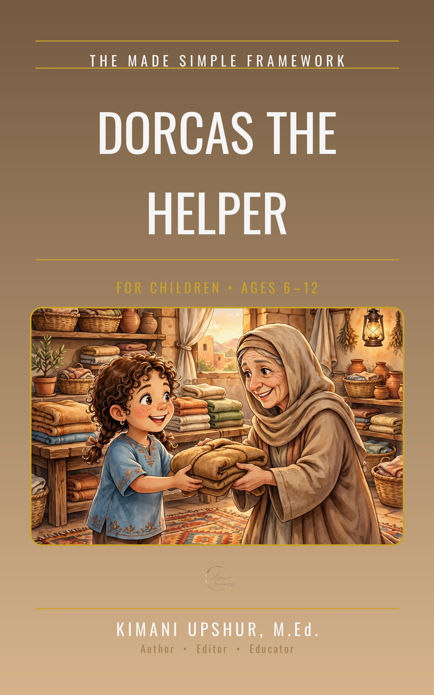

Home / Kids & Teens / Children
Dorcas the Helper

The woman who sewed — and the coats that told her story. This children's retelling of Dorcas follows her kindness stitch by stitch, from coats for everyone to little Layla's new coat, and the miracle that brought her back. Each short chapter ends with a simple Do or Pray activity, teaching kids that helping others is how love looks with its sleeves rolled up.
- Publisher
- Upshur Unlimited, LLC
- Author
- Kimani Upshur, M.Ed.
- Format
- Ebook
- Language
- English
- Audience
- For Children • Ages 6–12
More Children Books
Explore the full collection of books for children.